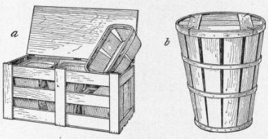

226. Packages
Description
This section is from the book "Vegetable Gardening", by Ralph L. Watts. Also available from Amazon: Vegetable Gardening.
226. Packages
Many factors must be considered when selecting packages: (1) The most advantageous size must be determined. This is an age of small packages, which are gaining in popularity among both vegetable growers and vegetable buyers. As a rule, produce sustains less injury in transportation when in small packages, and the vegetables are always more attractive and more convenient to handle. This last fact is especially important from the consumers' standpoint. Any child can carry home with ease and delight the packed 2 or 4-quart basket represented in Figure 45, b. Although bushel baskets, (Figure 46, b and c) are used in some sections, they are too large for most purposes.
(2) The appearance of the package counts for much in making satisfactory sales. Is it neat, rather than clumsy? Is it bright in color instead of dull and dingy? Does it add to the attractiveness of the vegetables, making the display more pleasing?
Fig. 45. Popular Packages.
a. Well-braced 1-bushel basket; b. 2 or 4-quart basket, one of the best retail packages; c, half-bushel basket with cover.
(3) Is the package a satisfactory carrier? Do the vegetables reach the market in first-class condition? The package must be adapted to different seasons of the year; i.e., in summer it must provide proper ventilation, in winter thorough insulation against cold, but at all times it must furnish the best possible protection against thieves encountered in transportation. It should also be of such a character that the vegetables will reach the market in the best possible condition so far as freshness and soundness are concerned.
Fig. 46. Popular Packages. a, Half-bushel picking basket: b, bushel picking basket, also used in some sections for marketing; c, bushel basket with cover for shipping.
(4) The package must also be adapted to the size, shape and solidity of each particular crop. (5) It should be convenient to handle. This is one of the reasons why the 2 and 4-quart baskets (Figure 45, b) are so popular with the retail trade. The neat copper bail invites purchasers. These baskets are winners, because they are small, neat, attractive and convenient.
(6) The cost is an element to be considered, but the least expensive packages may be the dearest in the end. A safe policy is to buy the best as cheaply as possible.
(7) Is the product to be shipped or sold locally? Some dainty packages are excellent for a home trade, but they are not satisfactory for shipping.
(8) The demands of the market must, to a certain extent, be recognized; that is, if a market has become accustomed to a particular style of package, there are certain advantages in the exclusive use of this particular package. A superior package, however, always attracts attention.
(9) The nesting, loading and carrying qualities of a package are important considerations. It is a great convenience to be able to nest a large number of baskets. When loading on the wagon, economy of space is important, and it gives the driver an easy and comfortable feeling to know that the packages are riding satisfactorily and that there is no danger of their upsetting or falling off.
There are so many different types of packages that amateurs are usually perplexed as to what to buy. Barrels are used in immense numbers, especially in handling heavy crops like potatoes, sweet potatoes, root crops and squashes, and are also used extensively by southern gardeners in shipping kale, spinach and lettuce. Almost anything may be packed in barrels. The barrel is the standard package employed by Long Island gardeners, and is used largely by most gardeners in Philadelphia County, Pa., and, in fact, more or less throughout the country, for many classes of vegetables. The barrel is clumsy and inconvenient to handle and far from being attractive; yet it will continue to be a popular package for many of the heavier vegetables.
Fig. 47. a, Three, six, eight and ten-quart basket; b, 5-pound basket, desirable for man. of vegetable; c, California crate, four five-pound baskets.
Fig. 48. a, Florida tomato crate or carrier, also used for other vegetables; b. hamper made in sizes up to a barrel capacity.
Fig. 49. a, Bushel tomato crate; b, six-basket nesting crate; c, sweet com and cantaloupe crate, 12 x 12 x 24 inches.
Fig. 50. LONG ISLAND HOME HAMPER.
Bushel boxes are held in high esteem in some sections, especially around Boston. They are 16 inches square and 8 inches deep. While many producers and dealers do not favor this package, it has decided advantages, which are as follows:
(1) It is easy to pack. (2) It loads compactly and hauls well. (3) It is strong and durable.
There are many types of baskets. The 5/8 and bushel baskets (Figure 45, b and c) are widely used both for shipping and selling locally. The hamper (Figure 48, b) is also used extensively in shipping cucumbers, spinach, kale, lettuce, radishes, peas, beans and some other crops. Carriers of various designs are coming into more general use every year. One of the best is shown in Figure 48, a, containing six 4-quart baskets. The Long Island home hamper (Figure 50) has proved to be very successful in supplying a high-class city trade, being shipped directly to the consumer. This crate is 10 inches deep, top length 24 inches, bottom length 21 1/2 inches, top width 13 1/2 inches, bottom width 10 1/2 inches. Crates of various sizes and designs are in common use.
It often pays to buy packages in the "knock down." The freight rates are less when they are shipped in compact form and less storage room is required in the packing house. If possible, carlot shipments should be secured, several neighbors clubbing together when necessary to make up a car.
Very little effort has been made to standardize the size of different kinds of packages. It would be necessary, of course, to have different sizes of some styles, but the whole matter could be easily adjusted. The dimensions or capacities of truck barrel hampers, half-barrel hampers, six-basket carriers or crates and other classes of packages should be uniform throughout the country.
Continue to:
Tags
plants, crops, gardening, cultivated, harvesting, food ,greenhouses, fertiliser, vegitables